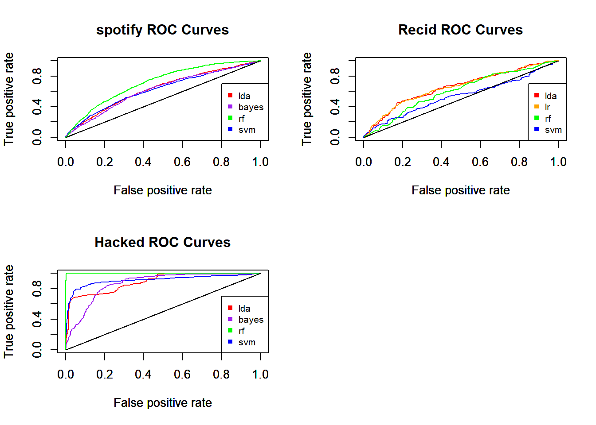

Chapter 5 Applications
5.1 Introduction
In order (Xie 2015) to illustrate and discuss the different remedies proposed in the previous chapter, we are handling each on different dataset. Hence we can make comparisons and try to measure their efficiency.
Our first choice as classifiers was to use LDA, LR, RF and SVM. having ascertained that LDA et LR give very similar results, we decide to substitute LR by naives bayes’classifier in order to proposed a richer experience (show plots). Notice that we firs try to use glmnet instead of glm but it doesn’t deliver better results (see spot.rmd). It is not unexpected that LR and LDA give nearly predictions, indeed they both are linear models and litteracy confirms they both give similar results (quote). !! maybe put it in classifiers part !!!!
About the code : We don’t introduce here all the manipulations done on the datasets, either the preparation of the dataset. You can find them in this github repositery, wich contains the .rmd for each dataset. In this repositery, you can also find the .R file which contains also the functions we code in order to avoid to many repetition in the code. At last, the alldat.Rdata stocked all objects built in the .rmd, it is used here to call the object we need.
We choose four dataset with different level of imabalanced.
Let’s briefly presents those datasets:
- Spotify …
- Recidivism …
- Creditcard …
- Hacked …
Table of priors ratio between positive and negative class
5.2 First Models
The function models compute our four models. We show the function in order to show the basic parameters. This parameters will be change in a following section. For now, we just want to observe results with basic parameters. This first computation can be used as a start reference to measure the remedies tested later.
| 0 | 1 | Sum | 0 | 1 | Sum | |
|---|---|---|---|---|---|---|
| rf | bayes | |||||
| 0 | 4431 | 975 | 5406 | 4373 | 983 | 5356 |
| 1 | 147 | 115 | 262 | 205 | 107 | 312 |
| Sum | 4578 | 1090 | 5668 | 4578 | 1090 | 5668 |
| lda | svm | |||||
| 0 | 4559 | 1078 | 5637 | 4566 | 1075 | 5641 |
| 1 | 19 | 12 | 31 | 12 | 15 | 27 |
| Sum | 4578 | 1090 | 5668 | 4578 | 1090 | 5668 |
The table … shows the confusion matrix resulting to the four classifiers used on the spotofy dataset. We observe the unabilty to properly predict the unpopular songs. A look on the metrics sharps this observation.
| accuracy | FNrate | TPrate | kappa | PrecisionPPV | Fscore | |
|---|---|---|---|---|---|---|
| rf | 0.8020466 | 0.8944954 | 0.1055046 | 0.1032829 | 0.4389313 | 0.1701183 |
| Bayes | 0.7904023 | 0.9018349 | 0.09816514 | 0.07332293 | 0.3429487 | 0.1526391 |
| lda | 0.8064573 | 0.9889908 | 0.01100917 | 0.01088917 | 0.3870968 | 0.02140946 |
| svm | 0.8082216 | 0.9862385 | 0.01376147 | 0.01772557 | 0.5555556 | 0.02685765 |
First we note that accuracy is very good, wigch confirms accuracy is not a relaible metrics concerning imbalance dataset. a simple view on Detection power(TPr) shows that we don’t achieve to predict what songs are very un popular. FN rate is obviously good because of the imblalanced ratio. Here FN won’t be a good metrics.
Let see the plot curve for all datasets.

!!! discuss the better results for creditcard and hacked !!! - from kaggle (datasets directly from professional use, more relevant, data more reliable) ? preprocessing (pca, onlynumeircal), extreme imbalanced ?
Even if creditcard and hacked seems not to need remedies to counteract imbalanced data, let see the detection power. We can argue that 3/4 of detection power is not enough to reassure users. In a professional use, we can wish at leat 90% of TPr.
At last, it is sure that all explicative variable are dependent to the variable to predict and and non colinear between them. for spotify we can’b sure that these variable can explain popularity, mayb there’s no link between them. As the variable for recid, are they really a good choice.
| accuracy | FNrate | TPrate | kappa | PrecisionPPV | Fscore | |
|---|---|---|---|---|---|---|
| rf | 0.9949815 | 0.05813953 | 0.9418605 | 0.9419781 | 0.9473684 | 0.9446064 |
| Bayes | 0.9477021 | 0.872093 | 0.127907 | 0.1597342 | 0.3142857 | 0.1818182 |
| lda | 0.9537771 | 0.7732558 | 0.2267442 | 0.287576 | 0.4814815 | 0.3083004 |
| svm | 0.9635499 | 0.7034884 | 0.2965116 | 0.4098061 | 0.75 | 0.425 |
On this one, we can see that only rf has very good results. Detection power and Fscore allows to judge the performance classifiers, contrarly to accuracy or FNr which are not usefull here. Rf has the better results, In second position comes svm, even if he detects only a third among True positive, its quite a good results for a first try with an imbalanced data set, and Fscore ank kappa are not so bad.
5.3 Preprocessing : Resampling methods
5.4 Direct cost sensisitive learnig
C5graph(Spot, "popularity", captest = "Kappa depending cost", captest2 = "Sensitivity \n and specificity", b=20, ylim = c(0,1))